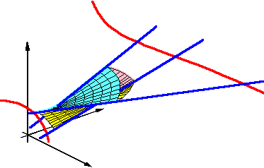

Cremona Convexity, Frame Convexity, and a Theorem of SantalóA. Holmsen, E. Goodman, R. Pollack, K. Ranestad, and F. Sottile.In 1940, Luis Santaló proved a Helly-type theorem for line transversals to boxes in Rd. An analysis of his proof reveals a convexity structure for ascending lines in Rd that is isomorphic to the ordinary notion of convexity in a convex subset of R2d-2. This isomorphism is through a Cremona transformation on the Grassmannian of lines in Pd, which enables a precise description of the convex hull and affine span of up to d ascending lines: the lines in such an affine span turn out to be the rulings of certain classical determinantal varieties. Finally, we relate Cremona convexity to a new convexity structure that we call frame convexity, which extends to arbitrary-dimensional flats in Rd. |  |